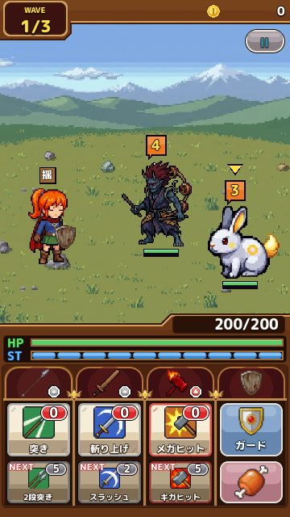
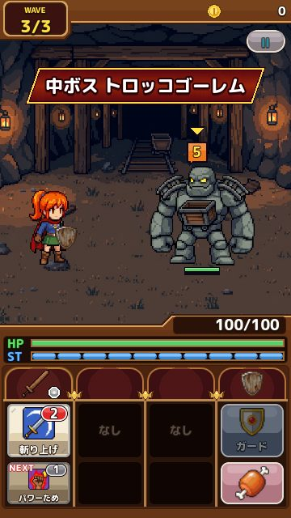

状態異常：どく・しびれ・くらやみ
敵にかける 3 つの状態異常のかかる確率・続くターン・効果を表で比べ、ボス戦での使い方と、主人公にかかる状態までまとめました。 更新：2026-11-23
3 つの状態異常の早見表
武器のスキルの中には、当てた敵を状態異常にするものがあります。キシドラ！の状態異常は「どく」「しびれ」「くらやみ」の 3 つです。
| 状態異常 | 印 | かかる確率（1 ヒット） | 続くターン | 効果 |
|---|---|---|---|---|
| どく | 毒（紫） | 50% | 5 | 毎ターン、敵の最大 HP の 3% のダメージ |
| しびれ | 痺（黄） | 35%（ボス・中ボスは 17%） | 2 | カウントが減らない（攻撃してこない） |
| くらやみ | 闇（青灰） | 50% | 4 | 60% の確率で攻撃が外れる |
かかると、敵の頭の上に「どく！」のような字が出て、カウントの吹き出しの右に小さな印がつきます。残りのターンは「II」→「状況」の敵の札で「状態 毒 5ターン」のように確かめられます。「ターン」は、こちらが 1 回行動するたびに 1 つ減ります。
同じ状態異常にもう一度かかると、残りのターンが最初の数にもどります。どくを 2 回かけてもダメージが 2 倍になるわけではないので、かかっている間は別のスキルを使うほうが得です。

どく：HP の多い相手ほど効く
どくにかかった敵は、こちらが行動するたびに、その敵の最大 HP の 3% のダメージを受けます（少なくとも 1）。5 ターン続けば、最大 HP の 15% を削れる計算です。最大 HP で決まるので、HP の少ない雑魚よりも、HP の多いボスほど 1 回のダメージが大きくなります。たとえば最大 HP 10,000 のボスなら、1 ターン 300、5 ターンで 1,500 です。
どくのダメージは、敵がスタンしていても、しびれていても入り続けます。スタンで動きを止めている間にもじわじわ削れるので、ボス戦の最初の数ターンでかけておくと、戦いの最後まで効いてきます。
スキルの説明には「50% で毒にする（5ターン）」と出ます（ゲームの中の説明では「どく」を漢字で「毒」と書きます）。
どくがいちばん生きるのは、倒すのに何ターンもかかる相手です。逆に、1〜2 ターンで倒せる雑魚にどくをかけても、ダメージが入る前に倒れてしまい、ST 3 がむだになりがちです。雑魚の WAVE では弱点の武器でまとめて倒し、どくはボスや中ボスのためにとっておく、と使い分けましょう。
しびれ：攻撃を先へ送る
しびれた敵は、2 ターンの間カウントが減りません。つまり、しびれている間は攻撃してきません。カウントが 1 の敵や、吹き出しが赤くなって次が必殺技のボスをしびれさせれば、その攻撃をまるごと 2 ターン先へ送れます。
ただし、ボスと中ボスにはかかりにくく、確率は半分の 17% になります。1 回でかかることを当てにせず、「かかったらもうけ」くらいの気持ちで、カウントに余裕のあるうちから使っておくのがコツです。
しびれにはもうひとつ大事な効果があります。攻撃を盾で防いでくる一部のボスは、しびれている間（スタン中も同じ）は防げなくなります。こちらの攻撃が「GUARD」で止められてしまう相手には、しびれが突破口になります。
くらやみ：重い攻撃と連続攻撃に
くらやみになった敵は、4 ターンの間、攻撃するたびに 60% の確率で外れます。外れたときは、連続攻撃なら残りの発も全部外れ、ダメージも、攻撃についている特別な効果もありません。
特に覚えておきたいのは、ボスの必殺技が外れた場合です。外れても、その必殺技は「撃ったこと」になり、次の必殺技までまたふつうの攻撃を数え直します。ガードが難しい必殺技や、何発も続く連続攻撃をしてくるボスには、くらやみがいちばん頼りになります。
外れた攻撃はガードの判定もないので、ジャストガードの ST 回復も起きません。ST をガードで回している戦い方のときは、そのぶん肉やスタン中の攻撃で ST を補いましょう。
状態異常を起こすスキルと武器
| 状態異常 | 剣（ひとりに） | 槌（ひとりに） | 槍（ふたりに） | ST |
|---|---|---|---|---|
| どく | どくどく斬り | どくどく叩き | どくどく突き | 3 |
| しびれ | しびれ斬り | しびれ叩き | しびれ突き | 3 |
| くらやみ | くらやみ斬り | くらやみ叩き | くらやみ突き | 3 |
槍のスキルは 2 体に当たるので、敵が並んでいる WAVE ではそれぞれの敵に別々にかかる確率があります。図鑑の「スキル」の札では、スキルの説明を読めるので、ほしい状態異常のスキルがどんなものかを確かめてから、武器探しをするとむだがありません。
地底の武器には、スキルに関係なく「当てると 10% の確率で」状態異常にする効果もあります（毒の牙・しびれ針・闇の粉。しびれ針はボスと中ボスには半分）。ただし、武器の効果はメインの武器のものだけが働くので、この効果を使いたい武器はメインに入れます。
次の場合は、状態異常は起きません。
- 必殺技に変わった攻撃（並びの最後に状態異常のスキルを置いても、必殺技になると状態異常はつかない）
- レアキャラ（金色の敵）
- ボスにミラクルガードで防がれたヒット
また、強いボスの中には、変身したり本気を出したりするときに、かかっている状態異常を全部消してしまうものもいます。姿が変わったら、もう一度かけ直しましょう。
何回でかかる？確率を数字で見る
状態異常は 1 ヒットごとに確率で決まります。1 回でかからなくても、使うたびにまた同じ確率でかかるチャンスがあります。何回使えば、どれくらいの確率で少なくとも 1 回かかるのかを計算すると、次のようになります。
| 確率（1 ヒット） | 1 回 | 2 回 | 3 回 | 5 回 |
|---|---|---|---|---|
| 50%（どく・くらやみ） | 50% | 75% | 約 88% | 約 97% |
| 35%（しびれ） | 35% | 約 58% | 約 73% | 約 88% |
| 17%（ボスへのしびれ） | 17% | 約 31% | 約 43% | 約 61% |
どくとくらやみは 2〜3 回でほぼかかりますが、ボスへのしびれは 3 回使っても半分に届きません。ボス戦でしびれをねらうなら、「ここで止めたい」という場面の何ターンも前から使い始めるか、しびれは雑魚と割り切って、ボスにはくらやみを使うのが現実的です。
槍の状態異常スキルは、ねらった敵とその次の敵の 2 体に当たり、それぞれに別々の確率でかかります。雑魚が並んでいる WAVE なら、1 回で 2 体ともしびれさせられることもあります。

主人公にかかる状態
敵だけでなく、主人公にも状態の変化がかかることがあります。主人公を長押しすると、今かかっている状態が一覧で出ます。地底・海底の状態は、主人公の頭の上に「揺」「炎」「毒」の印でも表示されます。
| 状態 | どこで | 効果 |
|---|---|---|
| パワーため | スキル | 次の攻撃のダメージ 2 倍 |
| 精神統一 | スキル | 次のスキルの ST が 0 |
| ベルセルク | スキル | 次の攻撃の会心の出やすさ 1.5 倍 |
| 揺れやられ | 地底（地震） | 次の 1 回のガードの構えが半分になり、ミラクルガードにならない |
| やけど | 地底（溶岩床） | 3 ターンの間、毎ターン最大 HP の 4% のダメージ |
| 毒 | 海底（毒棘） | ジャスト未満で受けた段があるとかかる。3 ターンの間、敵の番のはじめに最大 HP の 5% のダメージ |
| 闇の帳 | 地底 | 3 回の攻撃の間、向きの矢印が「？？」になる（当たる 0.5 秒前に本当の向きが見える） |
| スキルロック | 一部のボスの必殺技 | 手に持っていた武器の欄が 3 ターン使えない |
やけどと毒では、HP が 1 より減ることはありません。とはいえ、HP が少ないときに敵の攻撃を受ければ倒れてしまうので、やけどや毒の間は特にガードをていねいに。毒棘の毒は、全部の段をジャスト以上で受ければかからないので、ジャストをねらう良い練習相手でもあります。

ボス戦での使い方の実例
状態異常は、スタンや弱点と組み合わせると効果が大きくなります。ボス戦の流れの一例です。
- 開幕にどく：最初の 1〜2 ターンでどくをかける。5 ターン分のダメージが戦いの最後まで効く
- カウントが 1 になったらしびれ：かかれば攻撃を 2 ターン先へ。かからなかったらガードの準備
- しびれている間にスタン値をためる：弱点の武器で攻撃を重ね、スタンさせる。スタン中は会心と ST 回復のチャンス
- スタン中に必殺技：ST を回復しながら大きなダメージを入れる（必殺技のつなぎ方）
- 連続攻撃や必殺技が近いならくらやみ：吹き出しが赤くなる前にかけておけば、必殺技が 60% で外れる
しびれとスタンはどちらも「攻撃を止める」効果なので、重ねてもむだになりがちです。スタンのゲージがまだ遠いときはしびれで時間をかせぎ、スタンが取れそうなときはスタンを優先する、というように使い分けましょう。スタンの細かいしくみは 弱点とスタンのしくみ にまとめています。